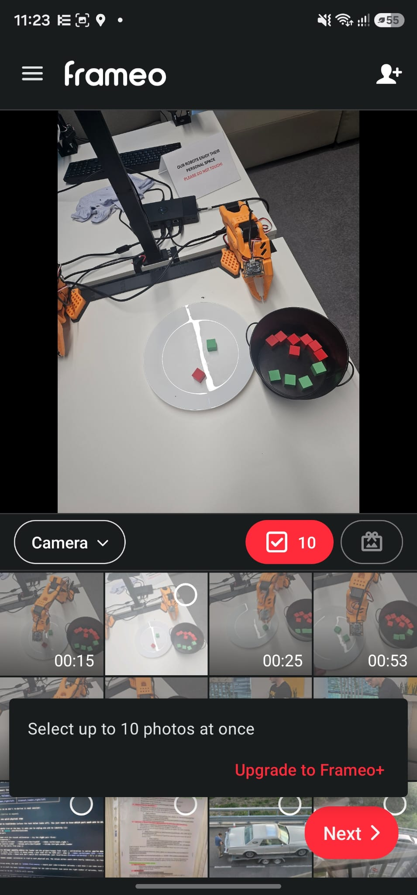
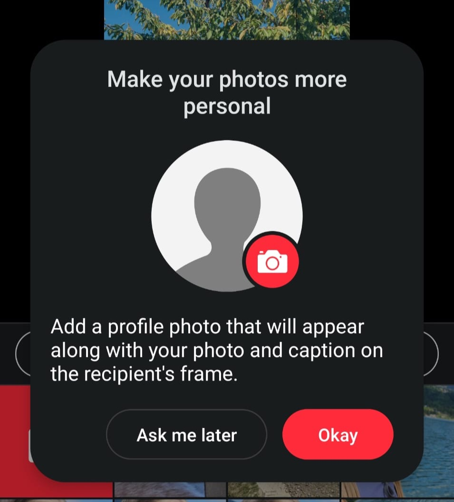
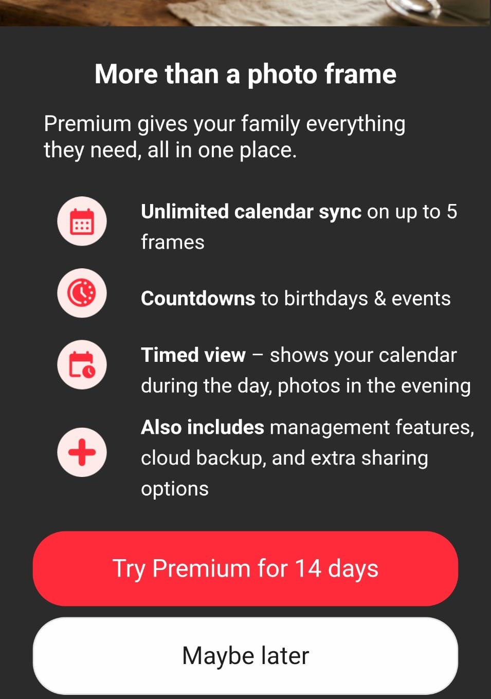
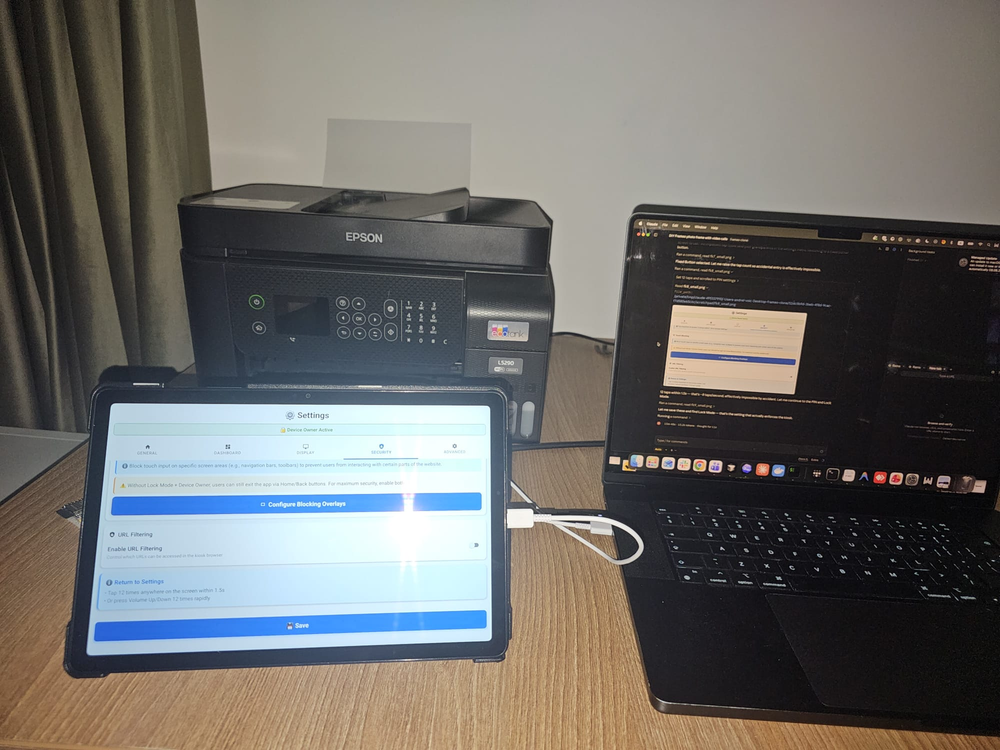

I built my own Frameo, and it works like a Golf 4
A digital photo frame wanted a subscription before it would send more than ten photos at a time. It also cost more than the tablet I replaced it with.
My grandparents have a digital photo frame. The pitch is perfect and I still believe in it: you take a picture, it appears on their wall, and nobody has to install anything, learn anything, or press anything. That is the entire product. It has one job.
Then I tried to send them a weekend.

Ten photos. I had about eighty pictures from two days, so that is eight rounds of: open the app, tap ten thumbnails, write a caption, send, wait, start again. There is a button under that message that makes the problem disappear, and it wants money every year.
I would not mind a cap on something exotic. Getting photos onto the frame is not exotic. It is the product. This is a kettle that boils 200 ml until you subscribe.
And it talks. It talks constantly.


Left: I am sending a photograph to my own grandmother, and it would like me to introduce myself first. Right: "More than a photo frame." I wanted it to be exactly a photo frame.
Calendar sync. Countdowns to birthdays and events. Timed view. Cloud backup. Fourteen days free. Not one of those is a thing I have ever wanted from a picture on a wall.
Then I looked at what the hardware costs.
The frame
~700 lei- A screen, and a plastic surround for the screen
- No camera, no microphone, no battery
- Ten photos per send, unless you subscribe
A used Samsung tablet, OLX
500 lei- Bigger, sharper screen
- Camera, microphone, speakers, battery
- A real computer, and 200 lei cheaper
This annoyed me a lot. The frame is the weaker machine and the more expensive one. It is a display, and it is outclassed by a second-hand tablet that has a camera, a microphone, a battery and a nicer panel, for two hundred lei less.
So the hardware was never the expensive part. The expensive part was the software's opinion about me.
So I built my own
The photos live on a laptop of mine that was already running in the corner 24/7, so the marginal cost of running the whole thing is a few lei of electricity a year. The tablet loads exactly one page, in kiosk mode, forever. No app store account, no cloud service, no plan, no tier.
This is the point where the project stopped being a project and became a conversation. I opened Claude Code, mostly because I had usage left before the reset and wanted to spend it, and Codex or any other agent would have done the same job. I described what I wanted the tablet to be, leaned on the /goal command, and it went from there.

I plugged the tablet into the laptop with a USB cable, and it did the rest over adb. Device owner mode, the kiosk configuration, blocking the overlays that would let somebody wander out of the app, and the escape hatch for when I need to get back in: twelve taps anywhere on the screen within 1.5 seconds. That is about eight taps a second, which it worked out on its own was effectively impossible to hit by accident. Between steps it took screenshots of the tablet and read them to check its own work. I went to sleep.
The Golf 4 rule
It should work like a Golf 4. You get in, you turn the key, you drive.
That was the design document, and everything else falls out of it. No ads. No subscription. No notifications. No updates, ever. No account. No "rate this app". No profile picture. No trial of anything. It shows photos. When you touch it, it does the one other thing it does.
The thing Frameo cannot sell me at any price
My grandparents own a smartphone. It lives in a drawer. Not because they cannot work it, but because a modern phone is exactly what I have spent this entire post complaining about: notifications, updates, forty icons, six different ways to answer a call and a punishment for choosing the wrong one. So it stays in the drawer.
So the frame is also a video phone. When someone rings, the photos vanish and the whole screen becomes the call. One green button. RĂSPUNDE. That is the entire interface.
The details underneath are boring on purpose:
- The answer button is 2.4 times the area of the decline button, with a 27 mm dead zone between them. Nothing on that screen is sized in pixels. Everything is in real millimetres, worked out from the tablet's actual physical screen size.
- Single tap only. No swipe, no double-tap, no long-press, no drag, no pinch, no scroll. Every one of those is a fresh way to fail in front of your grandmother.
- If she declines by accident, the same green button stays on screen for another five seconds. A wrong tap costs one tap.
- If something breaks, nothing is ever written on the screen. No error, no code, no dialog. It quietly repairs itself and goes back to the photos. An error message on a wall is just a broken wall.
Was it worth it?
The subscription I got so worked up about is only around 17 dollars a year, so let me be straight with you: this was never about the money. It was about being told no by a screen.
And this is the part where I am supposed to admit that it cost me a month of evenings instead. It did not. My own time in this was about an hour. Driving out to meet the man selling the tablet took roughly as long as building the thing did, which should tell you where the real work has moved.
The genuine article costs more than the tablet and still cannot do a video call at any price. And nothing on that wall is ever going to ask my grandmother for a profile picture.
It comes back on by itself after a power cut. It does not update. It does not want anything from me. Golf 4. 😀
The three Frameo screenshots are from the app on my own phone in August 2026, two of them cropped. The photo of the tablet and the laptop is a real Claude Code session provisioning the tablet over USB. The frame runs a self-hosted photo backend and a WebRTC video-call path on a laptop that was already on 24/7, and the tablet is a second-hand Samsung off OLX.
Keep Reading
Continue with the blog index, read how an agent worked out left from right by looking at the cameras, or how we turned a 3D printer into a caricature artist.